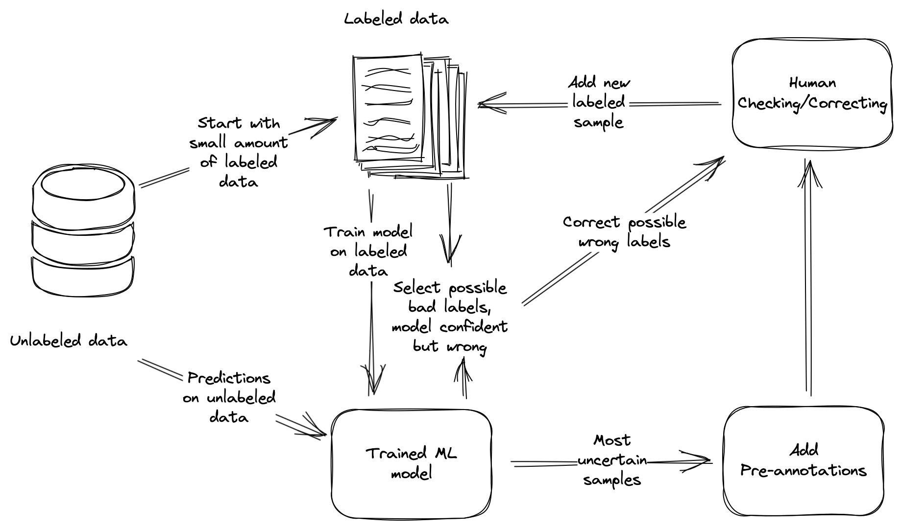

In this talk about Tesla co-pilot system Andrej Karpathy coined the term “Data Engine” to describe what is more generally known as a “Data Flywheel”. Broadly speaking a “Data Flywheel” when thinking is terms of machine learning systems is a:
A system which uses machine learning model outputs/predictions to improve training data
These training datasets can then be used to create better models, and so the ‘flywheel’ spins. A Data Engine has 2 main components or modules:
- Active Learning — selecting the most valuable samples to label.
- Data Cleaning — ensuring that your Ground Truth labels are accurate.
This article is the first in a series I’m write about designing and implementing an active learning system.
Let’s dive into each component a little bit more in depth.
Designing an Active Learning System
An active learning systems consists of several separate components that are connected but can also be used as tools on their own. From a systems view we just need to connect them.
Example: we want to automate text classification with an unlabeled dataset of 100k samples.
The diagram below displays a simple active learning system and its separate components.

Let’s look at these components in more detail starting at the unlabeled data.
1. Unlabeled data
When we first start we don’t have any labeled data. So we start of labeling a small amount of data. This small amount of labeled data can be seen as some kind of “kickstart” to get our system running. These samples and labels don’t have to be the most “valuable” for learning perspective.
100 labeled samples can be a good way to start.
These labeled samples simply allow us to train and model and make predictions.
2. Training a model
It’s now time to train our first model. This model is trained and validated on the small amount of samples we labeled. We don’t have to build a complex model the simpler the better at this stage is more benificial.
model.fit(X_train, y_train)
y_proba = model.predict_proba(X_test)We than use the trained model to make predictions over out ~100k unlabeled dataset. In the case of our example text classification problem we want to get the probabilities of every class because we need them in the next step.
3. Active learning
Active Learning is the process identifying the most valuable samples in a dataset to label, where their value is determined by the improvement the sample brings to the model based on some machine learning metric. We basically assume that the model can learn the most from samples is most uncertain about.
Initially, when enhancing a weak baseline, the easiest instances may be the most valuable. However, as the model improves over time, the hardest instances become more informative and hold greater value for the model’s progress.
We are now going to use the predictions probabilities of the model on our unlabeled data to select samples for human labeling. What we want to do is to select the predictions the the model is most uncertain about and send them for human evaluation.
[
{
"text": "This is a really great product",
"prediction": {
"positive": 0.95,
"negative": 0.05
}
},
{
"text": "I don't know what to feel about is laptop",
"prediction": {
"positive": 0.49,
"negative": 0.51
}
}
]In the above example predictions the model is more uncertain about the second example than the first. If we need to send one of these examples for human evaluation/annotation we should send the second one.
In our example case we make predictions over the 100k unlabeled data and we send the 100 most uncertain model predictions to our human annotators.
4. Guided annotating
We help the human annotator by adding pre-annotations (predictions) this makes correcting or adding labels much easier and faster. These new labels are than added to labeled training dataset. By only annotating the samples that your models is most uncertain about we build a dataset that with only informative samples.
This will most likely lead to a better performing model on a smaller amount of data.
5. Repeat
We then proceed to repeat the process again, starting from step 2. By doing so, you are likely to observe a significantly faster improvement in your model’s performance compared to when you labeled samples randomly.
6. Bad label detection
During the active learning cycle, it is beneficial to periodically conduct checks to ensure the quality and accuracy of your labels.
Add meta-data to double checked samples so it will be send for double checking again.
In most cases, you’ll encounter two significant challenges: random annotation errors and bias. Random annotation errors can arise from misunderstandings in labeling instructions or the inherent difficulty in distinguishing between certain classes.
from doubtlab.ensemble import DoubtEnsemble
from doubtlab.reason import ProbaReason, WrongPredictionReason
model.fit(X, y)
reasons = {
'proba': ProbaReason(model=model),
'wrong_pred': WrongPredictionReason(model=model)
}
doubt = DoubtEnsemble(**reasons)
indices = doubt.get_indices(X, y)A straightforward strategy for identifying and fixing labeling errors is to look at the samples where the model prediction is confident but also wrong. This can be an indicator for a possible bad label. These samples should be double checked by a human annotator.
Conclusion
Implementing an active learning system involves connecting these components and creating a feedback loop that continuously refines the training data and models. Starting with a small labeled dataset, a model is trained and used to make predictions on unlabeled data.
The predictions are then used to select samples for human labeling based on uncertainty. Human annotators are aided by pre-annotations, facilitating faster and more accurate labeling. The process is repeated, leading to accelerated improvement in the model’s performance.